Universidad Nacional Autónoma de México
Facultad de Ingeniería
Unidad de Creación de Materiales Docentes para Ingeniería – UCREMDI

Unidad de Creación de Materiales Docentes para Ingeniería – UCREMDI
Proyecto PAPIME PE112824
Periodo 2024-2026
La Universidad Nacional Autónoma de México, a través del Programa de Apoyo a Proyectos para Innovar y Mejorar la Educación (PAPIME), impulsa el fortalecimiento sistemático de los procesos de enseñanza y aprendizaje en los programas de licenciatura, en sus diversas modalidades, promoviendo estrategias de innovación educativa orientadas a elevar la calidad académica (DGAPA–PAPIME, UNAM, 2023). En este marco institucional, el presente proyecto se desarrolla en el ámbito de la Facultad de Ingeniería, atendiendo a las necesidades específicas de su comunidad estudiantil y docente.
El proyecto surge a partir de la identificación y análisis de asignaturas caracterizadas por un alto grado de abstracción conceptual y complejidad técnica, en las cuales el uso exclusivo de recursos didácticos tradicionales resulta insuficiente para favorecer la apropiación significativa de los contenidos. En respuesta a esta problemática, se planteó el diseño, desarrollo e implementación de materiales didácticos especializados, con énfasis en recursos visuales, estructurados y metodológicamente articulados con los programas de estudio vigentes.
En este contexto, UCREMDI (Unidad de Creación de Materiales Docentes para Ingeniería) se consolida como una estrategia institucional de innovación educativa cuyo objetivo central es sistematizar los procesos de creación, actualización, validación y difusión de materiales didácticos dirigidos a la enseñanza de la ingeniería.
Asimismo, el Proyecto 2B se concibe como el componente operativo y metodológico de UCREMDI, mediante el cual se instrumentan acciones concretas para la producción, organización y evaluación académica de los materiales generados, así como para la incorporación de estudiantes y docentes en un esquema colaborativo e interdisciplinario. De esta manera, el Proyecto 2B materializa los objetivos académicos de UCREMDI, asegurando la pertinencia pedagógica, la coherencia curricular y la viabilidad técnica de los recursos desarrollados.
El proyecto UCREMDI ha contribuido de manera significativa a la consolidación de una cultura institucional orientada a la innovación educativa, promoviendo la reflexión crítica sobre las prácticas docentes tradicionales y fomentando la adopción de enfoques pedagógicos innovadores apoyados en tecnologías digitales.
A través de la producción de materiales especializados y de la capacitación del personal académico, UCREMDI ha fortalecido la calidad de la docencia en las asignaturas de ingeniería, favoreciendo prácticas de enseñanza más estructuradas, dinámicas y alineadas con las necesidades actuales del estudiantado.
La creación y consolidación de repositorios institucionales ha permitido asegurar la sostenibilidad, actualización y transferencia del conocimiento generado, evitando la dispersión de materiales y facilitando su reutilización en distintos contextos académicos, lo que fortalece la memoria institucional de la Facultad de Ingeniería.
El proyecto se encuentra directamente alineado con los objetivos estratégicos del Plan de Desarrollo Institucional (PDI), particularmente en lo relativo a la innovación educativa, el fortalecimiento de la docencia y la incorporación estratégica de tecnologías digitales, consolidándolo como un componente estratégico del desarrollo académico.
El objetivo general del proyecto UCREMDI es crear y consolidar una unidad institucional especializada en la producción, organización y difusión de materiales didácticos innovadores, orientados a fortalecer los procesos de enseñanza y aprendizaje en las asignaturas de ingeniería impartidas en la Facultad de Ingeniería. Esta unidad tiene como finalidad incorporar enfoques pedagógicos contemporáneos y herramientas tecnológicas emergentes en el diseño de recursos educativos, asegurando su pertinencia curricular, calidad técnica y accesibilidad, así como su alineación con los programas de estudio vigentes. De esta manera, UCREMDI contribuye a la mejora continua de la práctica docente, al tiempo que promueve la actualización permanente de los contenidos y metodologías utilizadas en la formación de ingenieras e ingenieros.
Con el propósito de garantizar la organización, preservación y consulta sistemática de los materiales docentes generados en el marco del proyecto PAPIME–UCREMDI, se llevó a cabo el desarrollo de un sistema repositorio institucional orientado a la gestión integral de recursos educativos digitales. El sistema fue concebido como una plataforma web de uso interno, diseñada para permitir la catalogación, clasificación, almacenamiento y recuperación de materiales docentes, tales como videos educativos, manuales, guías, recursos multimedia y documentación pedagógica. Asimismo, se consideró su posible articulación con repositorios existentes de la Facultad de Ingeniería, con el fin de asegurar su compatibilidad y escalabilidad a futuro. Durante esta etapa se realizó el análisis de requerimientos funcionales y técnicos, el diseño de la arquitectura del sistema y la implementación de un prototipo funcional en versión beta, el cual permite visualizar las principales funcionalidades del repositorio. Como complemento, se elaboró documentación técnica y de usuario, así como un video demostrativo que expone el flujo general de uso de la plataforma.
Como parte de las acciones orientadas a la innovación en la producción de materiales audiovisuales para la docencia, se desarrollaron contenidos educativos correspondientes a las siguientes asignaturas y espacios académicos: • Clase de Ecuaciones Diferenciales, impartida por la Dra. Evelyn. • Clase de Física Experimental: Óptica, impartida por el Mtro. Villalobos. • Producción de material fotográfico institucional asociado a Justina y al CROFI. El objetivo central de esta actividad fue diseñar y producir clases audiovisuales que superaran el modelo tradicional de “pizarrón y exposición”, incorporando elementos visuales, narrativos y experimentales que favorezcan la comprensión de los contenidos y mejoren la experiencia de aprendizaje del estudiantado. Para ello, las y los docentes participaron activamente en la elaboración de guiones técnicos y storyboards, los cuales sirvieron como base para la grabación, producción y postproducción de los videos. Los materiales finales incluyen subtítulos, créditos institucionales y versiones adaptadas para su posible difusión en medios institucionales y redes académicas. De manera complementaria, se integró una fotogalería destinada a fortalecer la fototeca institucional de la Facultad de Ingeniería.
Con el fin de fortalecer las competencias digitales y pedagógicas del personal docente, se diseñaron tres cursos autogestivos enfocados en el uso de herramientas digitales aplicadas a la planeación y producción de materiales educativos. El Curso 1: “Creación visual de materiales educativos con Canva”, con una duración sugerida de 8 horas autogestivas, tuvo como objetivo capacitar a las y los docentes en el diseño visual de presentaciones, infografías y materiales didácticos atractivos y funcionales para el aula. El Curso 2: “Organización del conocimiento con NotebookLM (Google)”, con una duración sugerida de 6 horas autogestivas, se orientó a enseñar el uso de esta herramienta como asistente para el análisis de información, síntesis de contenidos y apoyo a la planeación académica, integrando prácticas de organización del conocimiento. El Curso 3: “Creación de contenidos interactivos con Genially”, con una duración sugerida de 8 horas autogestivas, tuvo como propósito promover el uso de recursos interactivos y gamificados mediante el diseño de presentaciones dinámicas, mapas conceptuales interactivos y materiales multimedia. La definición de la plataforma institucional para la implementación de estos cursos quedó sujeta a evaluación posterior. Como producto complementario, se elaboraron cápsulas educativas y manuales técnicos, los cuales podrán ser integrados al repositorio UCREMDI para su consulta permanente.

Director del Proyecto

Responsable Académico

Coordinación Técnica

Investigador Asociado

Asesor Metodológico

Colaborador Académico

Coordinador Académico del Proyecto

Desarrollo Web y Producción Multimedia

Desarrollo Web
Desarrollo Web
Desarrollo Web
Desarrollo Web
Desarrollo Web
Desarrollo Web
Hecho en México por la Universidad Nacional Autónoma de México (UNAM) en coordinación con la Facultad de Ingeniería (FI).
El uso de los escritos, trabajos, investigaciones, entrevistas, conferencias y vínculos provenientes de distintas fuentes electrónicas, personales de investigación o docencia son responsabilidad de sus autores o titulares.
Queda prohibido el uso comercial de la presente obra. Asimismo, la alteración, modificación, uso, transformación o creación derivada de esta obra, deberá contener la mención y reconocimiento del autor de la misma de conformidad con sus términos y en apego estricto a la legislación correspondiente (Ley Federal del Derecho de Autor).
Cualquier uso o manejo de esta obra requiere autorización escrita por el creador de la misma. Para más información consultar la “Guía Universitaria de Propiedad Intelectual”. Ciudad Universitaria 2024.
Proyecto PAPIME PE112824 UCREMDI.
A la Coordinación de Planeación y Desarrollo.
Al Centro de Docencia "Ing. Gilberto Borja Navarrete".
A la División de Ciencias Básicas.
A la División de Ingeniería Eléctrica.
Al Departamento de Computación.
A los Quiscos PC Puma y Departamento de Transformación Digital.
A la Coordinación General de Bibliotecas de la Facultad de Ingeniería.
Este sitio web es el resultado del proyecto PAPIME PE112824.
Este sitio fue desarrollado por el Ing. Emanuel López Hernández, Ing. Ana Laura Mendoza Millán y el Ing. Ricardo Avila Laguna; bajo supervisión de representantes del Departamento de Computación de la Facultad de Ingeniería en la Universidad Nacional Autónoma de México.
Esta obra está bajo una Licencia Creative Commons Atribución 4.0 Internacional.